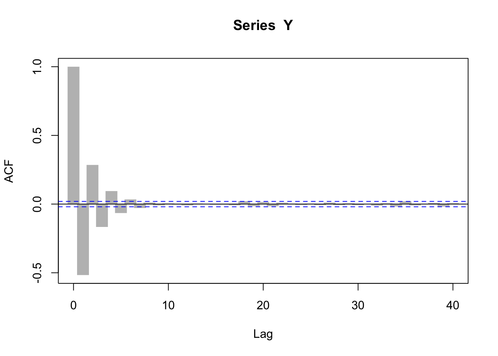
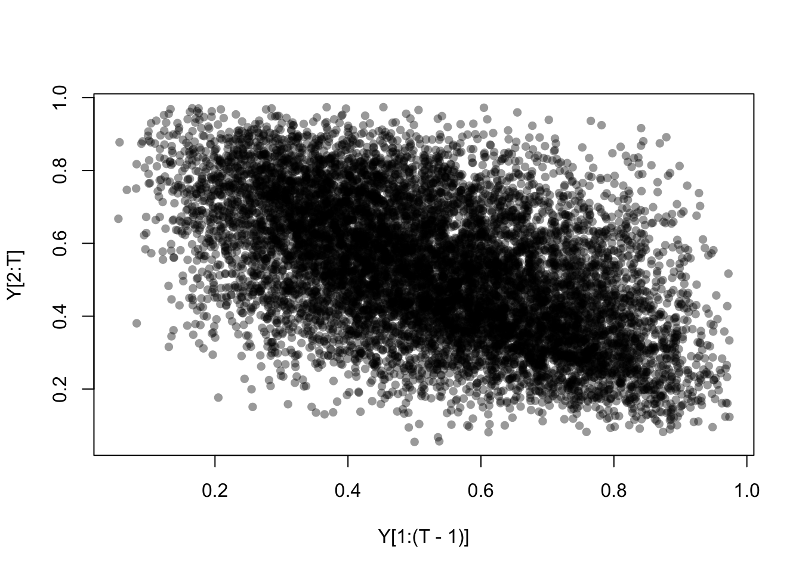
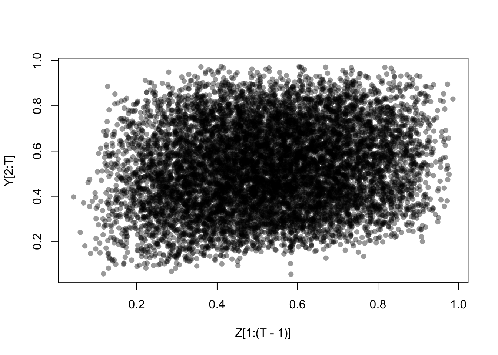
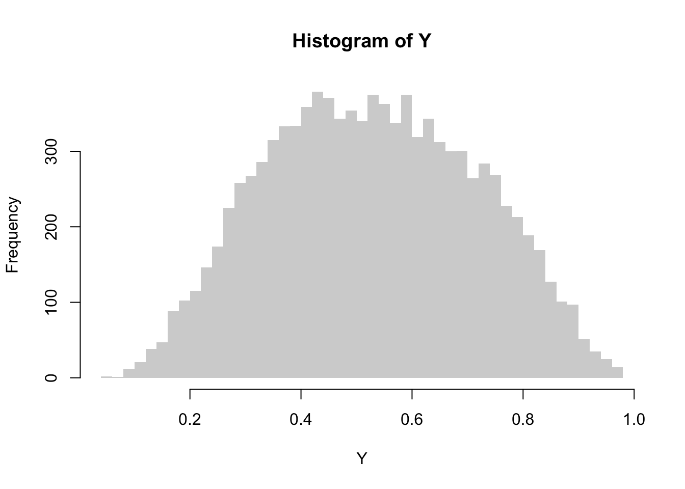

5.2 Affine hyperplanes, again
In a time series framework , as Koenker (2005) points out, quantile crossing is a more stringent restriction than it is in a cross-sectional set up. Indeed, as I have insisted so far, in a linear quantile regression model it is very convenient (and also not that restrictive) to impose boundedness and non-negativity on any variables appearing in the right-hand side of the defining equation, as a means to allow for greater flexibility in the functional form of the parameters. But then, under strict stationarity and presence of autoregressive terms these impositions necessarily apply to the response as well, since in this case \(Y_t\) and, say, \(Y_{t-1}\) are equal in distribution.
To sum up, if we are interested in studying the class of stationary stochastic processes \(\big((Y_t, Z_t)\colon t\in\mathbb{Z}\big)\) having a probability law for which the time homogeneous quantile regression equation \[\begin{equation} Q_{Y_{t}}(\tau|\mathfrak{F}_{t-1}) = \alpha_0(\tau) + \sum_{j=1}^{\mathrm{lag}_Y}\alpha_{j}(\tau) (Y_{t-j}) + \sum_{\ell=1}^{\mathrm{lag}_Z}Z_{t-\ell}^\prime\theta_\ell(\tau) \tag{5.3} \end{equation}\] holds for \(\tau\in(0,1)\) and \(t\in\mathbb{Z}\), then necessarily we have to restrict our attention to dynamics having as state space a bounded subset of \([0,+\infty)^{1+{\mathrm{D}_Z}}\). As a matter of fact, we lose no generality in assuming that \(\operatorname{support}(Y_t,Z_t)\subseteq [0,1]^{1+{\mathrm{D}_Z}}\). Therefore, we can resort to (a slightly modified version of) Proposition 4.1, and its multidimensional generalization, as a shortcut to specify the conditional quantile function of \(Y_t\) given \(\mathfrak{F}_{t-1}\) via the underlying “vertex functions.”
Example 5.2 Let \(v_{00}, v_{10}\) and \(v_{01}\) be the quantile functions corresponding to the Beta distribution with parameters, respectively, \((a_{00},b_{00}),\) \((a_{10},b_{10})\) and \((a_{01},b_{01})\), where \(a_{ij}\) and \(b_{ij}\) are positive real constants. Assume further that the function \(v_{11} := v_{10} + v_{01} - v_{00}\) is nondecrasing (notice that this will ensure that the range of \(v_{11}\) is contained in the unit interval, as \(v_{11}(0)=0\) and \(v_{11}(1)=1.\))
Now let \(\alpha_{0} = v_{00}\), \(\alpha_{1} = v_{10} - v_{00}\) and \(\theta_{1} = v_{01} - v_{00}\), take scalar random variables \(Y_0\) and \(Z_0\) supported on the unit interval, and let \(U_1, U_2, \dots\) and \(V_1, V_2, \dots\) be iid sequences of Uniform\([0,1]\) random variables (with both sequences mutually independent and also independent from \(Y_0\) and \(Z_0\)). Define now, for \(t\ge1\), recursively, \[\begin{align} Y_{t} &= \alpha_0(U_t) + \alpha_1(U_t)Y_{t-1} + \theta_1(U_t)Z_{t-1}\\[2pt] Z_{t} &= Q_t(V_t, Z_{t-1},\dots, Z_{0}, Y_{t}, Y_{t-1},\dots, Y_0) \end{align}\] where, for all \(t\ge1\), the function \(Q_t:(0,1)\times[0,1]^{2t+1}\to[0,1]\) is a quantile function on its first argument, whose range is contained in the unit interval. Then it holds that, for all \(\tau\in(0,1)\) and all \(t\ge1\), \[\begin{equation} Q_{Y_t}(\tau|\mathfrak{F}_{t-1}) = \alpha_0(\tau) + \alpha_1(\tau)Y_{t-1} + \theta_1(\tau)Z_{t-1} \end{equation}\]
Notice that the process \(\big((Y_t,Z_t)\colon t\ge0\big)\) may or may not be stationary, Markovian, ergodic, etc. These properties will hold or not depending on the initial distribution of the pair \((Y_0,Z_0)\) and on the “transition quantile functions” \(Q_t\); in fact, the equation for \(Y_t\) strongly suggests the Markov property, but \(Z_t\) may display longer dependence. The Markov property is attained whenever one can find a function \(Q^*\colon(0,1)\times[0,1]^3\) such that \(Q_t(\tau,z_{t-1},\dots,z_0, y_{t}, y_{t-1}, \dots, y_0) = Q^*(\tau,z_{t-1},y_{t},y_{t-1})\) for every \(t\ge1\) and every \(y_0,\dots,y_t,z_0,\dots,z_{t-1}\in[0,1].\)
Below is a code which simulates from the above model.
# Parameters for the Beta quantile functions v10, v01 and v00
{a10 = 1; b10 = 3; a01 = 5; b01 = 1; a00 = 3; b00 = 1}
# Conditional quantile function of Y[t] given Y[t-1] = 1 and X[t-1]=0
v10 = function (tau) qbeta(tau, a10,b10)
# Conditional quantile function of Y[t] given Y[t-1] = 0 and X[t-1]=1
v01 = function(tau) qbeta(tau,a01,b01)
# Conditional quantile function of Y[t] given Y[t-1] = 0 and X[t-1]=0
v00 = function(tau) qbeta(tau,a00,b00)
# Conditional quantile function of Y[t] given Y[t-1] = 1 and X[t-1]=1
v11 = function(tau) v10(tau) + v01(tau) - v00(tau)
# Functional parameters for the quantile regression equation
alpha0 = v00
alpha1 = function(tau) v10(tau) - v00(tau)
theta1 = function(tau) v01(tau) - v00(tau)
# Quantile function of Y given F[t-1]
Q = function(tau,Y.current,Z.current){
alpha0(tau) + alpha1(tau)*Y.current + theta1(tau)*Z.current
}
# Simulating the sample paths:
# Arbitrary starting point (Y0,Z0)
Y0 = runif(1)
Z0 = runif(1)
Y = Z = numeric()
Z.current = Z0
Y.current = Y0
T = 10001
for (t in 1:T){
# Simulates Y[t] given F[t-1] using the Fundamental Theorem of Simulation
Y[t] = Q(runif(1), Y.current, Z.current)
Z[t] = Q(runif(1), Z.current, Y.current)
#(obs: here Z follows the "same" dynamics as Y, but this can be changed. For instance, we could have Z[t]=runif(1), etc)
Z.current = Z[t]
Y.current = Y[t]
}
# ACF plot of
acf(Y, lwd=16, lend=3, col='gray') 
# Scatterplot of Y aggainst lagged values of Y
plot(Y[2:T]~Y[1:(T-1)], pch=16, col=rgb(0,0,0,.4))
# Scatterplot of Y aggainst lagged values of Z
plot(Y[2:T]~Z[1:(T-1)], pch=16, col=rgb(0,0,0,.4))
# Histogram of Y[1],..., Y[T]
hist(Y, border=NA, breaks="FD")